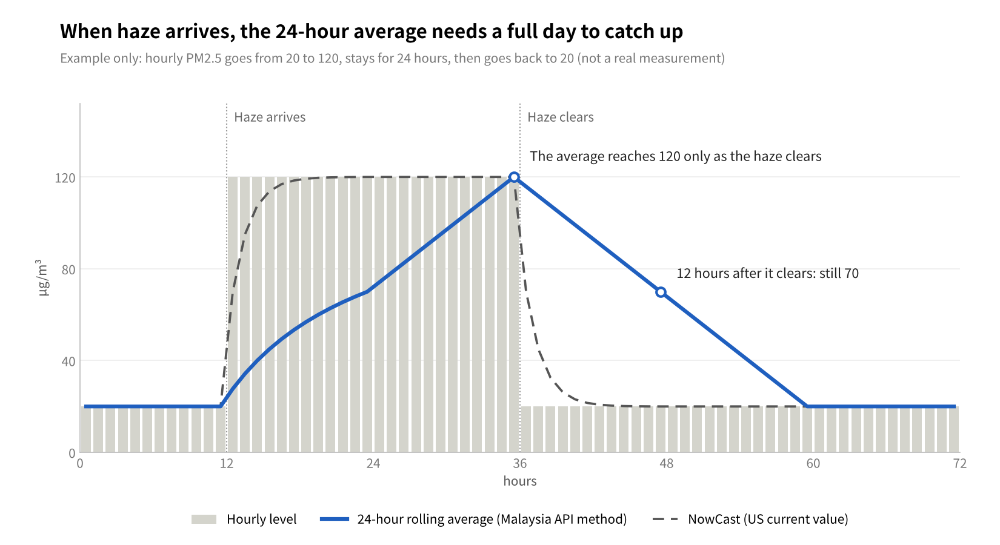
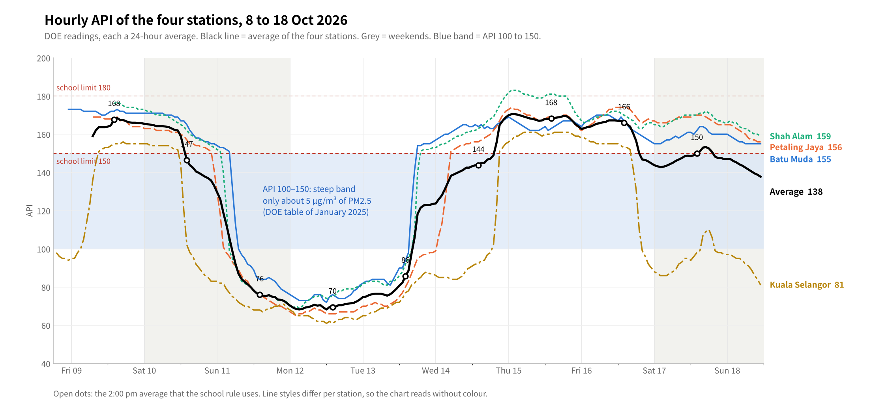
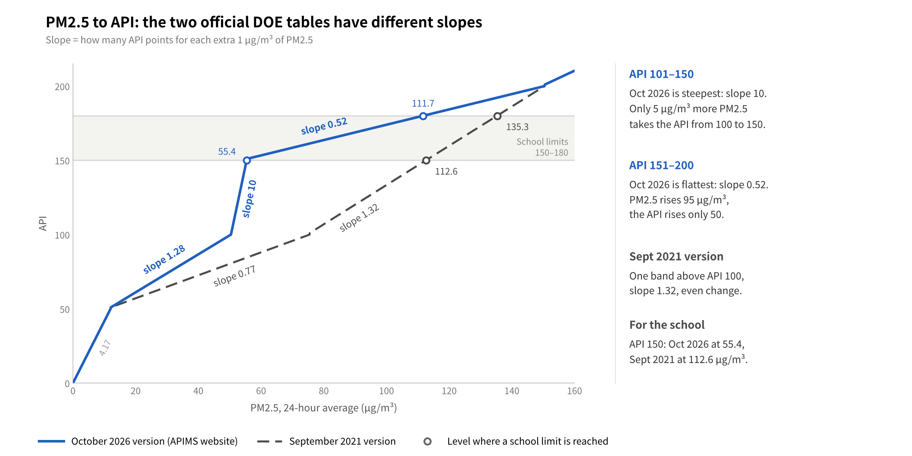

How is Malaysia's API calculated?
The lag of the 24-hour average, and a comparison with Singapore, the United States, China and Hong Kong
Abstract
Malaysia's API tells you what the air has been like over the past 24 hours, not what it is like right now. That is why it climbs slowly when haze rolls in, and falls just as slowly once the haze has cleared.
Introduction
Most parents have been there: the sky is grey, the air smells of smoke, yet the official API still says "Moderate". Open a foreign air-quality app at the same moment and it says "Unhealthy". Which one is right?
Quite possibly both. The two numbers are answering different questions. This article explains:
- how the API is worked out;
- why a 24-hour average always lags behind the real air;
- how Singapore, the United States, China and Hong Kong deal with the same problem.
1. What the API is
The Air Pollutant Index (API) is published by the Department of Environment (DOE). It condenses the pollution in the air into a single number with no unit: the higher the number, the worse the air.
| API | Status | DOE health advice (summarised) |
|---|---|---|
| 0–50 | Good | No limits on outdoor activity |
| 51–100 | Moderate | No limits on outdoor activity |
| 101–200 | Unhealthy | The elderly, pregnant women, children and people with heart or lung conditions should cut down on outdoor activity |
| 201–300 | Very unhealthy | High-risk groups should stay indoors |
| Above 300 | Hazardous | Everyone should avoid outdoor activity |
The DOE runs 68 monitoring stations across the country, and each one updates its API every hour. The official places to check it are the APIMS website and the MyJAS EQMS app.
2. How the API is calculated
A station's API is simply the highest of six sub-indexes, one for each pollutant. The DOE's own calculation document sets out three steps:
- Measure six pollutants: PM2.5, PM10, ozone, carbon monoxide, nitrogen dioxide and sulphur dioxide.
- Average each over its own time window. The windows differ because the body tolerates each pollutant for a different length of time.
- Convert each average into a sub-index from 0 to 500, then take the highest. That highest value becomes the station's API.
| Pollutant | Averaging window |
|---|---|
| PM2.5 (fine particles) | 24 hours |
| PM10 (coarser particles) | 24 hours |
| Ozone | 8 hours, and also 1 hour |
| Carbon monoxide | 8 hours |
| Nitrogen dioxide | 1 hour |
| Sulphur dioxide | 1 hour |
Suppose a station's PM2.5 sub-index is 152, its ozone sub-index is 40, and the rest are lower. Its API is then 152, with PM2.5 as the main pollutant.
According to the DOE, particles set the API most of the time in Malaysia, and almost always during haze. The document dates the addition of PM2.5 to 2017, while news reports give August 2018 as the start of public display. The conversion formula is in Appendix 1.
3. What is published, and what is not
The DOE publishes the hourly API for each station and the formula behind it, but not the hourly PM2.5 readings themselves.
- Published: the API for every station, every hour, with its status.
- Published: the formula that converts PM2.5 and the other pollutants into the API, in an official "API Calculation" document in Malay and English.
- Not published: the hourly PM2.5 concentration in micrograms per cubic metre. Assoc. Prof. Helena Varkkey of Universiti Malaya has pointed out that the government holds this data but does not release it.
The public therefore sees only the smoothed, 24-hour figure, never the hour-by-hour reading that would show how bad the air is right now.
There is a catch: the DOE has put two different versions of its calculation document online, and their PM2.5 figures do not match (see Appendix 1). The DOE has not said which one its system uses today. This does not change the main point of this article, which is that the 24-hour average makes the API run late.
4. Why a 24-hour average runs late
A 24-hour rolling average replaces only one twenty-fourth of its data each hour, so it takes about a day to fully register new haze, and about a day to shake it off again.
- Every hour, the newest reading is added and the reading from 24 hours earlier is dropped.
- Because the newest hour counts for only 1/24 of the total, the API peaks later than the real air, and lower.
- A study of Bangkok data found that this kind of average trails the hourly readings by about 10 to 13 hours.

When haze arrives, the US NowCast picks it up within a few hours. The 24-hour average, by contrast, only reaches its peak at the moment the haze clears, and then needs another full day to come back down.
An example from the school monitor
- At 2:00 pm on 17 October, the average API of the four stations was 150. That figure describes the air from 3:00 pm on 16 October to 2:00 pm on 17 October, not just the air at 2:00 pm.
- By 10:00 am on 18 October the average was still 139, only 11 points lower than the afternoon before. Even when the air improves, the number comes down slowly.
- The exception: under the formula on the APIMS website, the whole range from API 101 to 150 covers only about 5 µg/m³ of PM2.5, so the API can move very quickly here. Between 4:00 pm and 8:00 pm on 16 October, the Kuala Selangor station dropped from 152 to 99. With the school's limit set at 150, a very small change in the air can decide the outcome.
Hourly readings at the four stations
The chart below shows every hourly API reading at the four stations from the evening of 8 October to 11:00 am on 18 October. The light blue band marks the range from API 100 to 150.

- A single station crosses the 100–150 band quickly, usually within a few hours: the fall on 10–11 October, the rise on 13–14 October, and the sharp drop at Kuala Selangor on the evening of 16 October. This is what the steep band would lead you to expect.
- The four-station average, by contrast, can sit in the band for much longer. Since 17 October, the three Kuala Lumpur and Selangor stations have stayed above 150 while Kuala Selangor has stayed below 100, so the average lands in between.
- An average between 100 and 150 therefore does not mean that any one station is in that range. More often it means the stations disagree widely.
- Kuala Selangor often behaves differently. It is on the coast, usually reads lower than the other three, and rises and falls more sharply. Sea breezes may explain this, but it has not yet been checked against wind data.
5. How other countries do it
Singapore, the United States, China and Hong Kong also use 24-hour or longer averages to judge health risk, but each of them gives the public a faster number as well. Of the five places compared here, Malaysia is the only one that offers just the 24-hour figure.
| Place | Main index | Averaging for the main index | Faster number | Official advice on which to use |
|---|---|---|---|---|
| Malaysia | API | PM2.5: 24-hour rolling average | None | Use the API |
| Singapore | PSI | 24 hours | 1-hour PM2.5 reading in four bands (Normal, Elevated, High, Very High), banded since 2016 | 1-hour PM2.5 for what you do now; 24-hour PSI forecast for planning the next day |
| United States | AQI | Daily AQI: 24-hour average, midnight to midnight | NowCast: a weighted average of the last 12 hours that behaves like a 3-hour average when the air changes fast | The "current" value on official maps and apps is the NowCast |
| China | AQI | Daily report: 24-hour average | Hourly report with both the 1-hour PM2.5 reading and the 24-hour average | Daily report for the day as a whole; hourly report for now |
| Hong Kong | AQHI (1 to 10+) | 3-hour moving average, adding up the health risks of four pollutants | The index itself is based on 3 hours; hourly PM2.5 also published since 2012 | Adjust activities to the health-risk band |
A few things stand out:
- Singapore works most like Malaysia, but adds a 1-hour PM2.5 reading. The two countries are often compared, so it pays to check first whether a number is a 1-hour or a 24-hour figure.
- The United States NowCast is a compromise: in steady air it behaves like a 12-hour average, and when the air changes quickly it behaves like a 3-hour one. In an example from the US Environmental Protection Agency, a one-hour spike halves in the NowCast with each hour that follows, while that day's 24-hour average keeps only a twenty-fourth of it.
- Hong Kong switched to the AQHI at the end of 2013. Because it uses a 3-hour average, it responds fastest of all.
In 2023, the Malaysian researchers Varkkey and Ashfold argued that the DOE could publish hourly PM2.5 without any new equipment, since it would simply mean releasing data it already has.
6. How parents can read the numbers
The API is well suited to decisions such as whether there is school tomorrow. For "can we go outside now?", it helps to look at more than one thing.
- Watch the direction, not just the number. Compare the API over the last few hours. If it keeps rising, the air is getting worse, and the real air may already be worse than the number shows. If it keeps falling, the air has probably been better for a while.
- Trust your senses. Dr Fatimah Ahamad of Sunway University advises that once you can smell smoke, you should follow the advice for "Unhealthy", whatever the official category says.
- Don't compare foreign apps directly. Many use the US scale, and some show a 1-hour figure. In October 2026 the DOE itself explained that the scales, averaging times and update times differ.
- Treat low-cost sensors as a guide only. They show the air near your home, but they drift unless they are calibrated regularly.
- For school, follow the school's notice. The school decides on the official 2:00 pm API, which is a sensible choice because the 24-hour average is steady.
Conclusion
- The API is the highest of six sub-indexes, and during haze it is usually set by PM2.5.
- PM2.5 is averaged over a rolling 24 hours, so the API runs roughly half a day behind the real air and its peaks are flattened.
- The DOE publishes the formula but not the hourly PM2.5 readings.
- Singapore, the United States, China and Hong Kong all give the public a faster number. If Malaysia published hourly PM2.5 as well, parents could make better-timed decisions.
References
- Department of Environment Malaysia: API Calculation (APIMS website version)
- Department of Environment Malaysia: API Calculation (2021 version)
- Department of Environment Malaysia: Air Pollutant Index (API)
- SAYS (28 August 2026): Malaysia Once Made CNN Apologise For Its Haze Coverage (views of Varkkey and Fatimah)
- Malay Mail (8 October 2026): DoE explains why your AQI says 250 when the official API is 175
- National Environment Agency, Singapore: Haze Situation Update (18 September 2019); introduction of 1-hour PM2.5 bands (30 October 2016)
- US Environmental Protection Agency: NowCast fact sheet; AirNow: Daily and Hourly AQI – PM2.5; NowCast example (Wikipedia)
- Ministry of Ecology and Environment, China: HJ 633—2012 Technical Regulation on Ambient Air Quality Index
- Government of Hong Kong: Air Quality Health Index; hourly PM2.5 published since 2012
- Lag of a 24-hour rolling average: Sooktawee et al., 2023 (Bangkok study)
- School monitor data: Sasana haze monitor (hourly DOE API)
Appendix 1: the formula from PM2.5 to sub-index
Every sub-index uses the same stepwise straight-line formula: find the band the concentration falls in, then scale it within that band.
SI = (Ihigh − Ilow) ÷ (Chigh − Clow) × (C − Clow) + Ilow
- C: the 24-hour average PM2.5 concentration (µg/m³)
- C_low, C_high: the lower and upper concentration of the band
- I_low, I_high: the lower and upper index of the band
Two official DOE documents can be found online, and they disagree on the PM2.5 bands between API 100 and 200, which is exactly the range seen most often during haze:
| API step | APIMS website version (µg/m³) | DOE website 2021 version (µg/m³) |
|---|---|---|
| 0–50 | 0–12.0 | 0–12.0 |
| 51–100 | 12.1–50.4 | 12.1–75.5 |
| 101–150 | 50.5–55.4 | 75.5–150.4 (one step for 101–200) |
| 151–200 | 55.5–150.4 | as above |
| 201–300 | 150.5–250.4 | 150.5–250.4 |
| 301–400 | 250.5–350.4 | 250.5–350.4 |
| 401–500 | 350.5–500.4 | 350.5–500.4 |

The slope is the number of API points added by each extra µg/m³ of PM2.5. The APIMS version is steepest between API 101 and 150 (slope 10) and flattest between 151 and 200 (slope 0.52), while the 2021 version has a single band above API 100 with a slope of 1.32.
For example, take a 24-hour average PM2.5 of 100 µg/m³:
- APIMS website version: SI = 49 ÷ 94.9 × (100 − 55.5) + 151 ≈ 174
- 2021 version: SI = 99 ÷ 74.9 × (100 − 75.5) + 101 ≈ 133
The same air gives two results about 40 points apart. Which version is in use still needs to be confirmed by the DOE.
Appendix 2: word list
- PM2.5: particles 2.5 micrometres across or smaller. They reach deep into the lungs and make up most of the haze.
- Sub-index: the index worked out from the average concentration of a single pollutant.
- Rolling average: an average recalculated every hour, always over the most recent 24 hours.
- NowCast: the US estimate of current air quality, which gives more weight to the last few hours.
- Lag: the delay between a change in the real air and the change in the index.